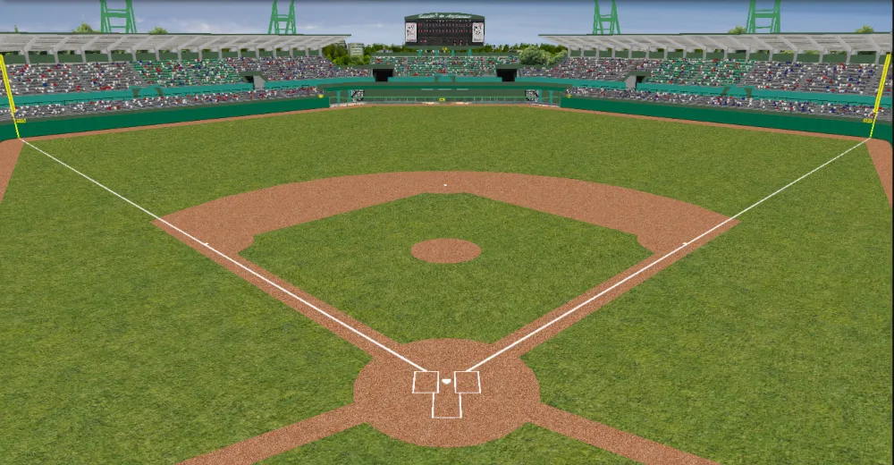
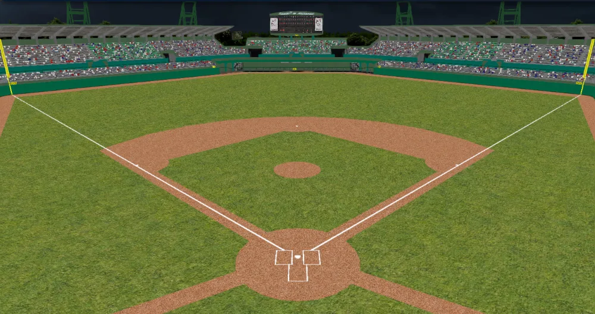

Ballpark ·  Monterrey Sultanes
Monterrey Sultanes
Estadio 5 de Septiembre
The name as it appears in the 2002 OOTP file. Some are period-correct (Edison International Field, Network Associates Coliseum, Bank One Ballpark); others carry later names.
Capacity26,000
SurfaceGrass
TypeOpen air
Center field400 ft
Lines325 / 325 ftleft / right


Field dimensions left-field line to right-field line, in feet
Distances and walls
| Point | Distance (ft) | Wall height (ft) |
|---|---|---|
| Left-field line | 325 | 10 |
| Left field | 345 | 10 |
| Left-center | 390 | 8 |
| Center field | 400 | 6 |
| Right-center | 390 | 8 |
| Right field | 345 | 10 |
| Right-field line | 325 | 10 |
Park factors index, 100 = neutral
| Factor | Index |
|---|---|
| Batting average | 101 |
| Average vs. LHB | 100 |
| Average vs. RHB | 101 |
| Doubles | 111 |
| Triples | 114 |
| Home runs | 97 |
| Home runs vs. LHB | 97 |
| Home runs vs. RHB | 96 |
OOTP's park factors times 100. Above 100 means the park inflates that event; 103+ in green, 97 and under in red. The L/R columns are by batter hand (OOTP stores them as avg_l/avg_r and hr_l/hr_r).
Climate by month
| Jan | Feb | Mar | Apr | May | Jun | Jul | Aug | Sep | Oct | Nov | Dec | |
|---|---|---|---|---|---|---|---|---|---|---|---|---|
| Avg. temperature (°F) | 72 | 72 | 74 | 76 | 78 | 80 | 81 | 81 | 80 | 79 | 75 | 73 |
| Rain (OOTP rating) | 2 | 3 | 6 | 7 | 14 | 19 | 17 | 20 | 17 | 16 | 6 | 3 |
Rain is OOTP's relative rain setting for the park (0 = dry; higher = more rainouts).
Attendance and home record 2002 to date
| Team | League | Home dates | Attendance | Per game | Capacity used | Home W-L |
|---|---|---|---|---|---|---|
| Monterrey Sultanes | FBL | 19 | 448,972 | 23,630 | 91% | 11-8 |
Attendance is season to date from team_financials.csv; home W-L counts regular-season games played here as the home club.